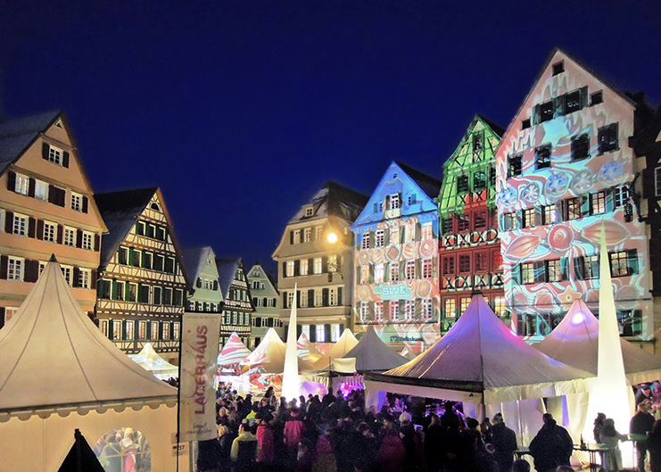

3rd International Conference on |
|
Following the successful meetings in Göttingen (2014) and Lyon (2016), the third edition of the international meeting dedicated to post-translational modifications (PTMs) in bacteria will be held on 3rd and 4th of December 2018, in Tübingen, Germany.  The meeting topics will cover protein phosphorylation, uridylation, acetylation, glycosylation, pupylation, targeted degradation and other modifications, as well as the methods used to study them. A research topic of Frontiers in Microbiology focusing on bacterial PTMs is open for submissions here. All conference participants are invited to submit their manuscripts directly via the Frontiers website. The deadline for manuscript submission is May is 2019. The topics of submitted manuscripts do not have to correspond to the conference presentations/posters. Any contribution relevant for the field of bacterial PTMs is welcome. For any questions related to the research topic please contact one of the Topic Editors: Ivan Mijakovic, Christophe Grangeasse, Boris Macek. Keynote Speakers: Important Deadlines: Scientific Committee: Local Organizing Committee:
|
|